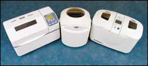
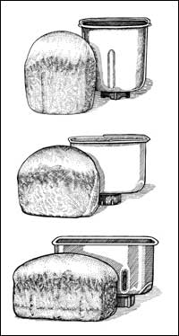
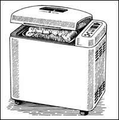

The Bread Machine! These are words that strike terror into the hearts of artisan bakers and advocates of hands-on home baking, while conjuring up visions of delight to ever-growing hordes of baking enthusiasts who claim they would never bake bread without a machine.
An all-in-one appliance that is certainly an innovation in a time-honored craft, the bread machine creates fresh, satisfying, full-flavored yeast breads. To set the process in motion, all you do is measure and pour the ingredients into the bread pan that serves as the mixing canister, then push a couple of buttons. But a big reason people get so much joy from bread-machine baking has to do with the deep emotional value of making bread, not the appliance itself.
Whether you go out and buy a new machine, inherit one from a friend who never used it or pick one up at a rummage sale, you’ll be thrilled with the results if you give this appliance a fair run.
The convenience of the bread machine has found a new market among people who would otherwise never bake, but nevertheless enjoy good bread: those with the busiest schedules, like on-the-go parents, people who love gadgets and bakers who have physical disabilities that might prevent them from preparing bread by hand. The bread machine also has won over many people already skilled at baking bread by hand, but it has reached many more who were not inspired to learn to bake bread by an older method.
The amount of actual hands-on baking time, apart from assembling the ingredients, is just minutes with a bread machine.
And then, aside from putting away the ingredients and wiping up a bit of flour on the counter, there is no cleanup, which is remarkable for a craft that is known for being messy. The machine mixes, kneads, deflates, allows for the proper rising time, bakes and often cools the loaf, all automatically.
If you tried years ago to use a bread machine and were disappointed with the quality of the loaves, take heed: A new generation of machines that are nothing short of remarkable have come along with improvements to the hardware.
Bread machines are now made by about a dozen manufacturers in various sizes and with a variety of features.
They are not only easy to use, but they inspire you to be creative in your own baking. And bread-machine baking requires so little of your time that you can enjoy the luxury of fresh bread every day. When all the hassle of baking is removed, you can enjoy the entire process - from shopping for ingredients to hearing the cries of delight from appreciative eaters.
With a bread machine, a light and high loaf is the result of using a precise, carefully measured liquid-to-flour ratio in conjunction with a machine’s perfectly controlled series of risings. The controls also may be set to “Dough Only” so that the machine can be used just for the mixing-kneading-rising process, after which you can shape the loaf yourself and bake it in your regular oven to produce a bread that looks more like a traditional, handmade loaf.
Yet, a loaf of bread made in the machine is - just like handmade bread - superior in nutrition, texture and taste to its commercially produced, store-bought cousin. Homemade bread is free of additives, colorants, preservatives and chemical fixatives. Whenever you have such control over what you put in your bread, you are guaranteed quality.
While hand-wrought loaves boast an appealing visual charm, each loaf baked in the machine is the same shape as its baking pan. Even so, the loaves fresh from the machine have their own special beauty, eliciting oohs and aahs from the most stalwart bakers. The aroma and sight of homemade bread are powerfully good - just try to resist tearing off the end of one of these still-warm loaves. These sensory experiences are part of baking’s pleasure.
What size of loaf does it make?
Bread machine manufacturers designate the volume of a machine in terms of loaf weight. A 1-pounder is a small loaf, a 1½-pounder is a medium loaf, and a 2- or 2½-pounder is large. A machine can always make a smaller loaf, but not one larger than the capacity of its pan. A medium family would eat the 1½-pound loaf, and a 2-pound loaf is the top-selling size.
What shape is the loaf?
The unconventional loaves that come out of bread machines take their shape from their baking pans, and each loaf bears the distinctive mark of the automatic bakery - holes in the bottom created by the kneading paddles. There are three loaf shapes: The cube-shaped, tall cylindrical is popular because it slices perfectly on the horizontal to fit in a toaster or sandwich bag. The vertical rectangle is the most common, and similar to commercial loaf shape, but with fuller sides. The long horizontal is the most similar to a large, traditional bread pan and considered by some to be the most attractive loaf - these pans need two blades to mix an entire loaf properly. Also, note that some brands have heavier aluminum baking pans than others. Bread bakes most evenly in thicker pans.
Is the machine a basic or a multifunctional model?
There are basic cycles that mix, knead and bake white bread, fruit and nut breads and light whole wheats. For heavier whole-wheat and whole-grain breads, you want to choose a model with a “Whole-Wheat” cycle. This cycle is also known as the “Whole Grain” or “Basic Wheat” mode. This setting allows whole-grain flours a nice, long kneading time and an extra, and slightly longer, rising time as compared to the basic cycle, producing a lighter, higher loaf. This is really nice for all sorts of whole-wheat breads made with more than 50-percent whole-grain flour.
It should definitely be used for 100- percent whole-wheat or whole-grain breads, and for breads containing specialty flours. On many of the newer machines, there will be a beep during this cycle to identify when to add any extra ingredients, such as raisins or nuts. Models that preheat at the beginning of some, but not all, of their cycles generally do preheat in the “Whole Wheat” cycle.
When you find a machine that fits your needs, go ahead, push the button, bake bread, enjoy the delectable results and stand back to collect compliments. Reprinted from The Bread Lover’s Bread Machine Cookbook by Beth Hensperger. (© 2000 Harvard Common Press)
100-percent Whole-wheat Bread
(a recipe for bread machines)
For 1 ½-pound loaf:
¾ cup water
¾ cup milk
2 tablespoons canola oil
¼ cup light molasses
4 cups whole-wheat flour
3 tablespoons gluten
1¾ teaspoons salt 1 tablespoon SAF yeast or 1 tablespoon plus
½ teaspoon bread machine yeast For 2-pound loaf: 1 cup water
7/8 cup milk 3 tablespoons canola oil 1/3 cup light molasses
5 cups whole-wheat flour
¼ cup gluten
2¼ teaspoons salt
1 tablespoon plus ½ teaspoon SAF yeast or 1 tablespoon plus 1 teaspoon bread machine yeast
The first thing you may notice about this recipe is the amount of flour it calls for - it’s more than the usual proportion. That’s because all whole-grain flour breads are naturally more compact than ones that contain some bread flour. For this bread, use the finest grind of stone-ground whole-wheat flour.
Be sure to use a machine with a “Whole Wheat” cycle, otherwise your machine will labor too much during the kneading.
Place all the ingredients in the pan according to the order in the manufacturer’s instructions. Set crust on medium and program for the “Whole Wheat” cycle; press start.
(This recipe is not suitable for use with the delay timer.)
When the baking cycle ends, immediately remove the bread from the pan and place it on a rack. Let cool to room temperature before slicing.
|
 The three basic loaf shapes of bread machines are, from top, the tall cube shape, the wide rectangle and the long horizontal. |
 The Zojirushi Home Bakery Supreme BBCC-X20 ($200), Toastmaster Bread Maker TBR15 ($45) and the Breadman Pro Double Loaf TR2828 ($100). All three machines have a special setting for heavier whole-wheat breads, and the Zojirushi also allows for a custom setting. The Toastmaster has the smallest cube-shaped pan size. The Breadman makes two loaves at a time, in the standard cube shape. The Zojirushi is the only one that produces traditional-shaped loaves in its longer, rectangular pan. |
 |